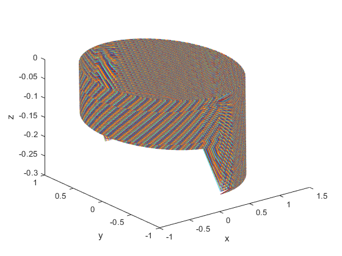
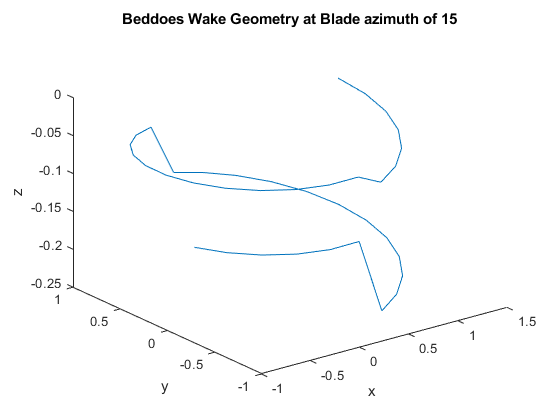
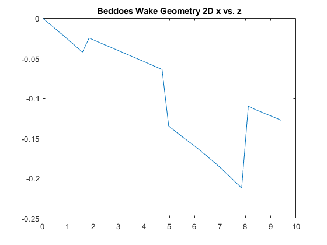
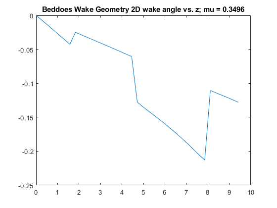
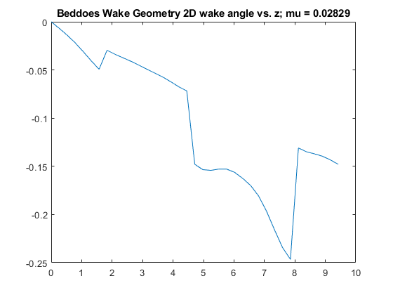

Contents
clc
close
clear
UH 60
[Nb, N_psi, R_i, a, omega_i,A_i,A_blade_i,cd0,f_i,T_i,c_i,rho,k,...
L_tr,x_cg,y_cg,h,vb, lock, theta_tw] = find_constants;
[R,A,A_blade,f,v_inf_mph,v_inf,c,sigma,omega,v_tip,alpha_d,alpha,...
mu,T,CT_constant_T,lambda_hover,psi,e,r,Cl_alpha,nu,dr,...
linear_inflow_power,MS_inflow_power,w] = find_general_inflow(Nb, R_i,...
a, omega_i,A_i,A_blade_i,f_i,T_i,c_i,rho);
Assignment 1 %%%%%%%%%%%%%%%%%%%%%%%%%%%%%%%%%%%%%%%%%%%%%%%%%%%%%%%%%%%
Inflow Functions
[lambda_TPP_UH60_FF,lambda_i_TPP_UH60_FF,lambda_output]...
= find_linear_inflow(mu, alpha, CT_constant_T);
[trim_inflow, CH_TPP_UH60_FF, CY_TPP_UH60_FF, beta, beta_dot,...
beta_star, theta, theta_dot, theta_star]...
= find_trim_inflow(mu, psi, CT_constant_T, sigma, f, A,L_tr, R, vb,...
linear_inflow_power, theta_tw,lambda_TPP_UH60_FF, omega, x_cg, y_cg,...
h, T, lock, a, cd0);
[cn_1] = find_MS_1_inflow(mu(174), psi, nu, alpha, CT_constant_T);
[cn_3] = find_MS_3_inflow(mu(174), psi, nu, alpha, CT_constant_T);
[w,lambda_MS_total] = find_MS_real_inflow(cn_1, cn_3, w, psi,nu,...
CT_constant_T, mu(174));
[u_t, u_p_linear, u_p_MS, T_linear_bar, Q_linear_bar, T_MS_bar,...
Q_MS_bar,P_linear_bar, P_MS_bar] = ...
find_bemt(r, psi, mu(174), beta(:,174), beta_star(:,174),v_inf, ...
lambda_TPP_UH60_FF(174),Cl_alpha,lambda_MS_total, theta(:,174),...
rho, c, R, cd0, N_psi, dr, Nb, omega, v_tip);
epsilon_t_linear_it = 1;
epsilon_p_linear_it = 1;
while (epsilon_t_linear_it > 0.004) && (epsilon_p_linear_it > 0.004)
T = T_linear_bar;
linear_inflow_power = P_linear_bar;
CT_constant_T = (T./(rho*A*v_tip^2)) * ones(1, 223);
[lambda_TPP_linear_it,lambda_i_linear_it,lambda_output_linear_it] ...
= find_linear_inflow(mu, alpha, CT_constant_T);
[trim_inflow_linear_it, CH_TPP_UH60_FF_linear_it,...
CY_TPP_UH60_FF_linear_it, beta_linear_it, beta_dot_linear_it, ...
beta_star_linear_it, theta_linear_it, theta_dot_linear_it, ...
theta_star_linear_it] = find_trim_inflow(mu, psi, CT_constant_T,...
sigma, f, A,L_tr, R, vb, linear_inflow_power, theta_tw,...
lambda_TPP_linear_it, omega, x_cg, y_cg, h, T, lock, a, cd0);
[u_t_linear_it, u_p_linear_linear_it, u_p_MS_linear_it, ...
T_linear_bar_linear_it, Q_linear_bar_linear_it, T_MS_bar_linear_it,...
Q_MS_bar_linear_it,P_linear_bar, P_MS_bar_linear_it, alpha_linear,alpha_MS] = ...
find_bemt(r, psi, mu(174), beta_linear_it(:,174), beta_star_linear_it(:,174),v_inf, ...
lambda_TPP_linear_it(174),Cl_alpha,lambda_MS_total, theta(:,174),...
rho, c, R, cd0, N_psi, dr, Nb, omega, v_tip);
epsilon_t_linear_it = abs(T_linear_bar - T);
epsilon_p_linear_it = abs(P_linear_bar - linear_inflow_power);
end
epsilon_t_MS_it = 1;
epsilon_p_MS_it = 1;
while (epsilon_t_MS_it > 0.004) && (epsilon_p_MS_it > 0.004)
T = T_MS_bar;
MS_inflow_power = P_MS_bar;
CT_constant_T = (T./(rho*A*v_tip^2)) * ones(1, 223);
[lambda_TPP_MS_it,lambda_i_TPP_MS_it,lambda_output] = ...
find_linear_inflow(mu, alpha, CT_constant_T);
[trim_inflow_MS_it, CH_TPP_UH60_FF_MS_it, CY_TPP_UH60_FF_MS_it, beta_MS_it,...
beta_dot_MS_it, beta_star_MS_it, theta_MS_it,...
theta_dot_MS_it, theta_star_MS_it] = find_trim_inflow(mu, psi, CT_constant_T, sigma,...
f, A,L_tr, R, vb, MS_inflow_power, theta_tw,lambda_TPP_MS_it, omega,...
x_cg, y_cg, h, T, lock, a, cd0);
[cn_1] = find_MS_1_inflow(mu(174), psi, nu, alpha, CT_constant_T);
[cn_3] = find_MS_3_inflow(mu(174), psi, nu, alpha, CT_constant_T);
[w,lambda_MS_total] = find_MS_real_inflow(cn_1, cn_3, w, psi,nu, CT_constant_T, mu(174));
[u_t, u_p_linear, u_p_MS, T_linear_bar, Q_linear_bar, T_MS_bar,...
Q_MS_bar, P_linear_bar, P_MS_bar, dL_MS, alpha_linear,alpha_MS, dFx_MS, dFz_MS]...
= find_bemt(r, psi, mu(174), beta_MS_it(:,174), ...
beta_star_MS_it(:,174),v_inf, lambda_TPP_MS_it(174),...
Cl_alpha,lambda_MS_total, theta_MS_it(:,174), rho, c,...
R, cd0, N_psi, dr, Nb, omega, v_tip);
epsilon_t_MS_it = T_MS_bar - T;
epsilon_p_MS_it = P_MS_bar - MS_inflow_power;
P_MS = P_MS_bar;
end
Display
disp("Thrust Linear"); disp(T_linear_bar)
disp("Thrust Mangler Squire"); disp(T_MS_bar_linear_it)
disp("Power Linear"); disp(P_linear_bar)
disp("Power Mangler Squire"); disp(P_MS_bar_linear_it)
Thrust Linear
856.9096
Thrust Mangler Squire
1.1240e+04
Power Linear
4.2059e+04
Power Mangler Squire
7.0532e+04
Plots P1
figure (1)
plot (mu, lambda_TPP_UH60_FF)
title("Uniform inflow vs advance ratio")
xlabel("advance ratio mu"); ylabel("uniform inflow lambda")
figure (2)
[r_grid, psi_grid] = meshgrid(r,psi);
surf(r_grid.*cos(psi_grid), r_grid.*sin(psi_grid), abs(lambda_MS_total));
title("Non uniform Inflow")
zlabel("Non uniform Inflow lambda")
legend("Mangler & Squire Total Inflow")
figure(3)
plot(psi, dFx_MS)
title("Force in x vs azimuth at all r locations")
xlabel("psi"); ylabel("dFx_MS")
figure(4)
plot(psi, dFz_MS)
title("Force in z vs azimuth at all r locations")
xlabel("psi"); ylabel("dFz_MS")
figure(5)
plot(r, dFx_MS')
title("Force in x vs radial location at all azimuth locations")
xlabel("r"); ylabel("dFx_MS")
figure(6)
plot(r, dFz_MS')
title("Force in z vs radial location at all azimuth locations")
xlabel("r"); ylabel("dFz_MS")
figure(7)
uniform_crt = ones(361, 100);
surf(r_grid.*cos(psi_grid), r_grid.*sin(psi_grid), uniform_crt*lambda_TPP_UH60_FF(174))
title("Uniform Inflow"); zlabel("Uniform Inflow lambda")
Warning: Imaginary parts of complex X and/or Y arguments ignored.
Warning: Imaginary parts of complex X and/or Y arguments ignored.
Warning: Imaginary parts of complex X and/or Y arguments ignored.
Warning: Imaginary parts of complex X and/or Y arguments ignored.


Assignment 2 %%%%%%%%%%%%%%%%%%%%%%%%%%%%%%%%%%%%%%%%%%%%%%%%%%%%%%%%%%%
Wake model
Constants
epsilon_wake = 1;
del_psi_w = pi/12;
psi_b = psi;
psi_w = 0:del_psi_w:3*pi;
epsilon_wake = 1;
Wake functions
while epsilon_wake > 0.004
T_old_store = T_MS_bar;
[constant_circulation,constant_circulation_bar] = ...
find_constant_circulation(rho, omega, R, Nb, T_MS_bar, v_tip, A);
circulation_v = constant_circulation;
[xv, yv, zv, mu_z, mu_x, E, r_wake] = ...
find_prescribed_wake(lambda_TPP_linear_it(174), mu(174), alpha(174),...
v_tip, r(100), psi, psi_w, psi_b);
[xv2, yv2, zv2, mu_z2, mu_x2, E2, r_wake2] = ...
find_prescribed_wake(lambda_TPP_linear_it(15), mu(15), alpha(15),...
v_tip, r(100), psi, psi_w, psi_b);
[r_rotor] = find_rotor(psi_b, r, c);
disp("display checkpoint1")
[V, lambda_wake] = find_biot_savart(circulation_v,...
v_tip, r_wake, psi_w, psi_b, r_rotor, r);
disp("display checkpoint2")
lambda_MS_total = lambda_wake(:,:,3);
for P_B = 1:length(psi_b)
[u_t, u_p_linear, u_p_MS, T_linear_bar, Q_linear_bar, T_MS_bar,...
Q_MS_bar, P_linear_bar, P_MS_bar, dL_MS, alpha_linear,alpha_MS,...
dFx_MS, dFz_MS] = find_bemt(r, psi(P_B), mu(174), beta_MS_it(P_B,174), ...
beta_star_MS_it(P_B,174),v_inf, lambda_TPP_MS_it(174),...
Cl_alpha,lambda_MS_total(:,P_B), theta_MS_it(P_B,174), rho, c,...
R, cd0, N_psi, dr, Nb, omega, v_tip);
epsilon_wake = 100*(T_MS_bar - T_old_store)/T_old_store;
P_wake = P_MS_bar;
end
disp(epsilon_wake)
end
display checkpoint1
display checkpoint2
-99.6074
Plot project 2
figure(8)
plot3(xv, yv, zv)
xlabel("x"); ylabel("y"); zlabel("z");
figure(9)
plot3(xv(:,15), yv(:,15), zv(:,15))
title("Beddoes Wake Geometry at Blade azimuth of 15");
xlabel("x"); ylabel("y"); zlabel("z")
figure(10)
plot(psi_w, zv(:,15))
title("Beddoes Wake Geometry 2D x vs. z")
figure(11)
plot(psi_w, zv(:,1))
title("Beddoes Wake Geometry 2D wake angle vs. z; mu = 0.3496")
figure(12)
plot(psi_w, zv2(:,1))
title("Beddoes Wake Geometry 2D wake angle vs. z; mu = 0.02829")
disp("Thrust Wake ="), disp(T_MS_bar_linear_it);
disp("Power Wake ="), disp(P_MS_bar_linear_it);
Thrust Wake =
1.1240e+04
Power Wake =
7.0532e+04
    